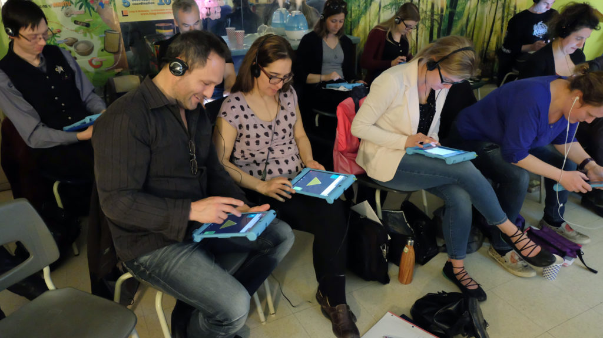

Des formations sur la pédagogie Fonofone sont régulièrement offertes par différents organismes hôtes (centres de services scolaires, Regroupements d’enseignants en arts, FAMEQ, Centre de musique canadienne, Faculté des Arts de l'UQÀM…).
N’hésitez pas à nous contacter si vous souhaitez organiser une session de formation dans votre région. Il nous fera plaisir de nous déplacer avec tout l’équipement nécessaire pour une demi-journée ou une journée entière.
Contactez-nous pour une soumission
Nous offrons également sur une base régulière, et gratuitement, des sessions de formation en ligne portant sur un point particulier de l’approche pédagogique ou d’une technique spécifique.
Inscrivez-vous à notre infolettre pour vous tenir informés et vous inscrire à la prochaine session.